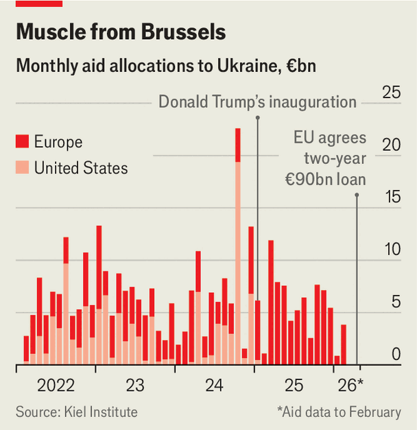

Ukraine is now Europe’s war. Survival can’t be the only aim
America’s disengagement means it is now the old continent’s conflict to manage
June 4th 2026

“This is a moment of truth for Europe,” declared Ursula von der Leyen, president of the European Commission, when Vladimir Putin’s tanks rolled into Ukraine in 2022. Now, after years of dallying, Europe might finally mean it. European Union members, plus other European countries such as Britain, are today responsible for almost all aid to Ukraine (see chart). Military integration is moving ahead, and a Franco-British initiative to police a notional ceasefire has been set up. A €90bn ($105bn) loan to Ukraine will start flowing this month. Sanctions on Russia are growing tougher.

Meanwhile Ukraine’s recent battlefield advances have revived a sense of diplomatic possibility. Europe wants to take over where American efforts have fizzled. “We will be part of the solution, and we should be part of the discussion,” said Emmanuel Macron, France’s president, in February. For the first time, such words sound descriptive rather than pleading.
Europe’s support, says Katarina Mathernova, the EU’s ambassador to Ukraine, “has been more resilient than we could have dared imagine.” Yet although Europe’s takeover gives it leverage, ministers and officials acknowledge that their governments are still groping towards a strategy that goes beyond maintaining Ukraine’s survival. In recent weeks policymakers have prematurely debated sending an envoy to negotiate with Mr Putin (the array of names floated included Angela Merkel and Mario Draghi), without a clear sense of what Europeans hope to achieve. On May 28th Kaja Kallas, the EU’s foreign-policy co-ordinator, deemed it wise to play down the speculation.
European officials agree that Mr Putin is in a tight spot. Yet few see any sign that he is willing to row back on his demands. That limits the potential for meaningful talks. One official says Europe will have nothing to offer Mr Putin except a gradual slowing of further sanctions. “We are not against negotiations if they are real,” says Margus Tsahkna, Estonia’s foreign minister. “But there is nothing to talk about yet.”
The confusion reflects differing aims. Some European governments want to sound out Russia’s red lines via “mediation” efforts, which could involve individual go-betweens rather than governments, or non-EU states such as Turkey. A serious negotiation with Mr Putin, in which Europe would sit on Ukraine’s side, still appears to be a way off. “I think we need both,” says one foreign minister. Some of the most intensive discussions about potential talks are taking place among the E3: Britain, France and Germany. That could revive fears among eastern European countries such as Poland that western countries might seek a “reset” with Russia over their heads. Ukraine is also sceptical.
Should Mr Putin grow willing to compromise, a ceasefire would probably require Ukraine to accept a loss of territory in the eastern Donbas region. Beyond providing as-yet-vague security guarantees, Europe’s best way of sugaring that pill is to speed up Ukraine’s bid to join the EU, something Ukrainians have craved since the Maidan revolution of 2014. Last year suggestions emerged—during peace talks led by America—that Ukraine could join the EU as soon as 2027. But although Mrs von der Leyen and others are pushing to keep Ukraine’s dream alive, that date is utterly implausible for a large, partly corrupt country with an income per person roughly one-third of Bulgaria’s. Officials believe Ukraine would be lucky to join in a decade.
That leaves a growing gulf between Ukraine’s sky-high hopes and many EU governments’ willingness to let the topic slide. To arrest that, Friedrich Merz, Germany’s chancellor, recently proposed an “associate membership” that would see Ukraine granted access to various EU institutions with limited or no voting rights, subsidies or single-market access. This is probably “as good as it’s going to get for Ukraine”, says Alexander Gabuev, the Berlin-based director of the Carnegie Russia Eurasia Centre, a think-tank. But the proposal has flopped among Ukrainians, who hear it as code for sitting in indefinite limbo. Volodymyr Zelensky, Ukraine’s president, immediately dismissed Mr Merz’s suggestion as “unfair”.
One or more negotiating “clusters” may be opened at an EU summit this month. But, as one European official says, “the accession discussion is hypocritical on both sides.” Europeans think Mr Zelensky’s failure to rein in expectations is irresponsible. They also worry that making an exception for Ukraine would upset aspirants in the Balkans. Meanwhile, among Ukrainians a new mood of scepticism towards the West is emerging. New polling finds that nearly three-quarters of Ukrainians still back EU membership—but that support has fallen most quickly among the young.
As the country has taken on a growing share of responsibility for its own defence, including the manufacture of arms and drone technology sought by partners across the world, it wants recognition of the shifting balance of power. “I see a deep change in Ukraine’s identity,” says Jana Kobzova, a Ukraine-watcher at the European Council on Foreign Relations. “Where they once saw the EU as a saviour, now it’s about self-reliance. Many say, ‘We are protecting you now.’”
Reformers in Ukraine still hope to use the EU’s money and political pledges as a barrier against authoritarian drift. “EU accession is like a light in the tunnel for Ukraine,” says Lana Zerkal, a Ukrainian diplomat. Conditions have been attached to the €90bn package, to Mr Zelensky’s chagrin. The first stage of the accession process requires rule-of-law reforms by 2027 before funding is released. Yet the slow pace of reform in Ukraine frustrates European officials. “We need to see more effort in Kyiv,” says one. “They need to help us advocate for them.”
Time is short. Although Ukraine’s “long-range sanctions”, as Mr Zelensky calls its drone and missile strikes inside Russian territory, have lifted spirits, no one knows how long that will last. Russia is escalating its attacks on Kyiv and other cities, and further attacks on power and water infrastructure could make next winter even harder than the last. For now, European arms and money keep Ukraine in the game. Last week Mr Zelensky struck a deal with Sweden for fighter jets that could help stop cruise missiles. But Europe cannot yet provide the anti-ballistic missiles needed to protect Ukraine’s cities. Last week Mr Zelensky also sent a letter to Donald Trump appealing for Patriot interceptors.
Meanwhile Europe’s own clock is ticking. Next year brings elections in most of its bigger countries, starting with France in April. Foreign-policy analysts worry that if the populist-right National Rally secures the presidency it would try to pull the plug on some of Europe’s commitments, including fundraising. It would certainly oppose Ukraine’s EU bid. “The French farmers have not woken up to this yet,” says Fabrice Pothier, a former NATO official now at Rasmussen Global, a consultancy. “We have not started the hard part.”
Intensifying discussions over aid, diplomacy and accession show that Europe is taking responsibility for the war on its eastern flank. But much of its plan still rests on hope: that Ukrainian resolve will not be broken, that Mr Trump can somehow be persuaded to turn against Russia or that Mr Putin can be forced to negotiate. “This is clearly Europe’s war now,” says Mr Pothier. “The question is whether it can be Europe’s peace.” ■
To stay on top of the biggest European stories, sign up to Café Europa, our weekly subscriber-only newsletter.